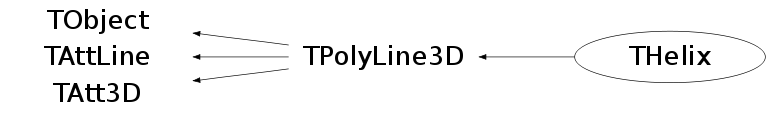

class THelix: public TPolyLine3D
THelix has two different constructors. If a particle with charge q passes through a point (x,y,z) with momentum (px,py,pz) with magnetic field B along an axis (nx,ny,nz), this helix can be constrcuted like THelix p(x,y,z, px,py,pz, q*B, nx,ny,nz); (nx,ny,nz) defaults to (0,0,1). A helix in its own frame can be defined with a pivotal point (x0,y0,z0), the velocity at that point (vx0,vy0,vz0), and an angular frequency w. Combining vx0 and vy0 to a transverse velocity vt0 one can parametrize the helix as x(t) = x0 - vt0 / w * sin(-w * t + phi0) y(t) = y0 + vt0 / w * cos(-w * t + phi0) z(t) = z0 + vz0 * t The second constructor has 6 parameters, Example: THelix pl1(xyz, v, w, range, rtype, axis); where: xyz : array of initial position v : array of initial velocity w : angular frequency range: helix range rtype: kHelixZ specifies allowed drawing range in helix Z direction, i.e., along B field. kLabZ specifies drawing range in lab frame. kHelixX, kHelixY, kLabX, kLabY, kUnchanged ... etc can also be specified axis : helix axis Example constructing a helix with several default values and drawing it: This initializes a helix with its axis in Z direction (rtype=kHelixZ).
Function Members (Methods)
public:
| THelix() | |
| THelix(const THelix& helix) | |
| THelix(Double_t* xyz, Double_t* v, Double_t w, Double_t* range = 0, EHelixRangeType rtype = kHelixZ, Double_t* axis = 0) | |
| THelix(Double_t x, Double_t y, Double_t z, Double_t vx, Double_t vy, Double_t vz, Double_t w) | |
| virtual | ~THelix() |
| void | TObject::AbstractMethod(const char* method) const |
| virtual void | TObject::AppendPad(Option_t* option = "") |
| virtual void | TObject::Browse(TBrowser* b) |
| static TClass* | Class() |
| virtual const char* | TObject::ClassName() const |
| virtual void | TObject::Clear(Option_t* = "") |
| virtual TObject* | TObject::Clone(const char* newname = "") const |
| virtual Int_t | TObject::Compare(const TObject* obj) const |
| virtual void | Copy(TObject& helix) const |
| virtual void | TObject::Delete(Option_t* option = "")MENU |
| Int_t | TAttLine::DistancetoLine(Int_t px, Int_t py, Double_t xp1, Double_t yp1, Double_t xp2, Double_t yp2) |
| virtual Int_t | TPolyLine3D::DistancetoPrimitive(Int_t px, Int_t py) |
| virtual void | Draw(Option_t* option = "") |
| virtual void | TObject::DrawClass() constMENU |
| virtual TObject* | TObject::DrawClone(Option_t* option = "") constMENU |
| static void | TPolyLine3D::DrawOutlineCube(TList* outline, Double_t* rmin, Double_t* rmax) |
| virtual void | TPolyLine3D::DrawPolyLine(Int_t n, Float_t* p, Option_t* option = "") |
| virtual void | TObject::Dump() constMENU |
| virtual void | TObject::Error(const char* method, const char* msgfmt) const |
| virtual void | TObject::Execute(const char* method, const char* params, Int_t* error = 0) |
| virtual void | TObject::Execute(TMethod* method, TObjArray* params, Int_t* error = 0) |
| virtual void | TPolyLine3D::ExecuteEvent(Int_t event, Int_t px, Int_t py) |
| virtual void | TObject::Fatal(const char* method, const char* msgfmt) const |
| virtual TObject* | TObject::FindObject(const char* name) const |
| virtual TObject* | TObject::FindObject(const TObject* obj) const |
| virtual Option_t* | TObject::GetDrawOption() const |
| static Long_t | TObject::GetDtorOnly() |
| virtual const char* | TObject::GetIconName() const |
| Int_t | TPolyLine3D::GetLastPoint() const |
| virtual Color_t | TAttLine::GetLineColor() const |
| virtual Style_t | TAttLine::GetLineStyle() const |
| virtual Width_t | TAttLine::GetLineWidth() const |
| Int_t | TPolyLine3D::GetN() const |
| virtual const char* | TObject::GetName() const |
| virtual char* | TObject::GetObjectInfo(Int_t px, Int_t py) const |
| static Bool_t | TObject::GetObjectStat() |
| virtual Option_t* | GetOption() const |
| Float_t* | TPolyLine3D::GetP() const |
| virtual const char* | TObject::GetTitle() const |
| virtual UInt_t | TObject::GetUniqueID() const |
| virtual Bool_t | TObject::HandleTimer(TTimer* timer) |
| virtual ULong_t | TObject::Hash() const |
| virtual void | TObject::Info(const char* method, const char* msgfmt) const |
| virtual Bool_t | TObject::InheritsFrom(const char* classname) const |
| virtual Bool_t | TObject::InheritsFrom(const TClass* cl) const |
| virtual void | TObject::Inspect() constMENU |
| void | TObject::InvertBit(UInt_t f) |
| virtual TClass* | IsA() const |
| virtual Bool_t | TObject::IsEqual(const TObject* obj) const |
| virtual Bool_t | TObject::IsFolder() const |
| Bool_t | TObject::IsOnHeap() const |
| virtual Bool_t | TObject::IsSortable() const |
| Bool_t | TObject::IsZombie() const |
| virtual void | TPolyLine3D::ls(Option_t* option = "") const |
| void | TObject::MayNotUse(const char* method) const |
| virtual Int_t | TPolyLine3D::Merge(TCollection* list) |
| virtual void | TAttLine::Modify() |
| virtual Bool_t | TObject::Notify() |
| void | TObject::Obsolete(const char* method, const char* asOfVers, const char* removedFromVers) const |
| static void | TObject::operator delete(void* ptr) |
| static void | TObject::operator delete(void* ptr, void* vp) |
| static void | TObject::operator delete[](void* ptr) |
| static void | TObject::operator delete[](void* ptr, void* vp) |
| void* | TObject::operator new(size_t sz) |
| void* | TObject::operator new(size_t sz, void* vp) |
| void* | TObject::operator new[](size_t sz) |
| void* | TObject::operator new[](size_t sz, void* vp) |
| virtual void | TPolyLine3D::Paint(Option_t* option = "") |
| virtual void | TObject::Pop() |
| virtual void | Print(Option_t* option = "") const |
| virtual Int_t | TObject::Read(const char* name) |
| virtual void | TObject::RecursiveRemove(TObject* obj) |
| virtual void | TAttLine::ResetAttLine(Option_t* option = "") |
| void | TObject::ResetBit(UInt_t f) |
| virtual void | TObject::SaveAs(const char* filename = "", Option_t* option = "") constMENU |
| virtual void | TAttLine::SaveLineAttributes(ostream& out, const char* name, Int_t coldef = 1, Int_t stydef = 1, Int_t widdef = 1) |
| virtual void | SavePrimitive(ostream& out, Option_t* option = "") |
| virtual void | SetAxis(Double_t* axis) |
| virtual void | SetAxis(Double_t x, Double_t y, Double_t z) |
| void | TObject::SetBit(UInt_t f) |
| void | TObject::SetBit(UInt_t f, Bool_t set) |
| virtual void | TObject::SetDrawOption(Option_t* option = "")MENU |
| static void | TObject::SetDtorOnly(void* obj) |
| void | SetHelix(Double_t* xyz, Double_t* v, Double_t w, Double_t* range = 0, EHelixRangeType type = kUnchanged, Double_t* axis = 0) |
| virtual void | TAttLine::SetLineAttributes()MENU |
| virtual void | TAttLine::SetLineColor(Color_t lcolor) |
| virtual void | TAttLine::SetLineStyle(Style_t lstyle) |
| virtual void | TAttLine::SetLineWidth(Width_t lwidth) |
| virtual Int_t | TPolyLine3D::SetNextPoint(Double_t x, Double_t y, Double_t z)MENU |
| static void | TObject::SetObjectStat(Bool_t stat) |
| virtual void | SetOption(Option_t* option = "") |
| virtual void | TPolyLine3D::SetPoint(Int_t point, Double_t x, Double_t y, Double_t z)MENU |
| virtual void | TPolyLine3D::SetPolyLine(Int_t n, Option_t* option = "") |
| virtual void | TPolyLine3D::SetPolyLine(Int_t n, Float_t* p, Option_t* option = "") |
| virtual void | TPolyLine3D::SetPolyLine(Int_t n, Double_t* p, Option_t* option = "") |
| virtual void | SetRange(Double_t* range, EHelixRangeType rtype = kHelixZ) |
| virtual void | SetRange(Double_t r1, Double_t r2, EHelixRangeType rtype = kHelixZ) |
| virtual void | TObject::SetUniqueID(UInt_t uid) |
| virtual void | ShowMembers(TMemberInspector& insp) |
| virtual Int_t | TPolyLine3D::Size() const |
| virtual void | TAtt3D::Sizeof3D() const |
| virtual void | Streamer(TBuffer& b) |
| void | StreamerNVirtual(TBuffer& b) |
| virtual void | TObject::SysError(const char* method, const char* msgfmt) const |
| Bool_t | TObject::TestBit(UInt_t f) const |
| Int_t | TObject::TestBits(UInt_t f) const |
| virtual void | TObject::UseCurrentStyle() |
| virtual void | TObject::Warning(const char* method, const char* msgfmt) const |
| virtual Int_t | TObject::Write(const char* name = 0, Int_t option = 0, Int_t bufsize = 0) |
| virtual Int_t | TObject::Write(const char* name = 0, Int_t option = 0, Int_t bufsize = 0) const |
protected:
| virtual void | TObject::DoError(int level, const char* location, const char* fmt, va_list va) const |
| Double_t | FindClosestPhase(Double_t phi0, Double_t cosine) |
| void | TObject::MakeZombie() |
| THelix& | operator=(const THelix&) |
| void | SetRotMatrix() |
Data Members
public:
| enum TObject::EStatusBits { | kCanDelete | |
| kMustCleanup | ||
| kObjInCanvas | ||
| kIsReferenced | ||
| kHasUUID | ||
| kCannotPick | ||
| kNoContextMenu | ||
| kInvalidObject | ||
| }; | ||
| enum TObject::[unnamed] { | kIsOnHeap | |
| kNotDeleted | ||
| kZombie | ||
| kBitMask | ||
| kSingleKey | ||
| kOverwrite | ||
| kWriteDelete | ||
| }; |
protected:
| Double_t | fAxis[3] | Direction unit vector of the helix axis |
| Int_t | TPolyLine3D::fLastPoint | The index of the last filled point |
| Color_t | TAttLine::fLineColor | line color |
| Style_t | TAttLine::fLineStyle | line style |
| Width_t | TAttLine::fLineWidth | line width |
| Int_t | TPolyLine3D::fN | Number of points |
| TString | TPolyLine3D::fOption | options |
| Float_t* | TPolyLine3D::fP | [3*fN] Array of 3-D coordinates (x,y,z) |
| Double_t | fPhi0 | Initial phase, so vx0 = fVt*cos(fPhi0) |
| Double_t | fRange[2] | Range of helix parameter t |
| TRotMatrix* | fRotMat | Rotation matrix: axis // z --> axis // fAxis |
| Double_t | fVt | Transverse velocity (constant of motion) |
| Double_t | fVz | Z velocity (constant of motion) |
| Double_t | fW | Angular frequency |
| Double_t | fX0 | Pivot's x position (see parametrization in class doc) |
| Double_t | fY0 | Pivot's y position (see parametrization in class doc) |
| Double_t | fZ0 | Pivot's z position (see parametrization in class doc) |
| static Int_t | fgMinNSeg | minimal number of segments in polyline |
Class Charts
{kind=link}
{kind=link}
{kind=link}
{kind=link}

Function documentation
void SetHelix(Double_t* xyz, Double_t* v, Double_t w, Double_t* range = 0, EHelixRangeType type = kUnchanged, Double_t* axis = 0)
Set all helix parameters.
THelix(Double_t x, Double_t y, Double_t z, Double_t vx, Double_t vy, Double_t vz, Double_t w)
Helix normal constructor.
THelix(Double_t* xyz, Double_t* v, Double_t w, Double_t* range = 0, EHelixRangeType rtype = kHelixZ, Double_t* axis = 0)
Helix normal constructor.
void SavePrimitive(ostream& out, Option_t* option = "")
Save primitive as a C++ statement(s) on output stream out.
void SetRange(Double_t* range, EHelixRangeType rtype = kHelixZ)
Set a new range for the helix. This will remake the polyline.
Double_t FindClosestPhase(Double_t phi0, Double_t cosine)
Finds the closest phase to phi0 that gives cos(phase) = cosine